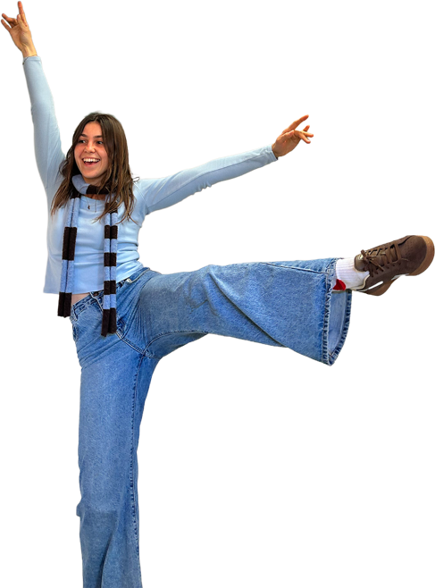
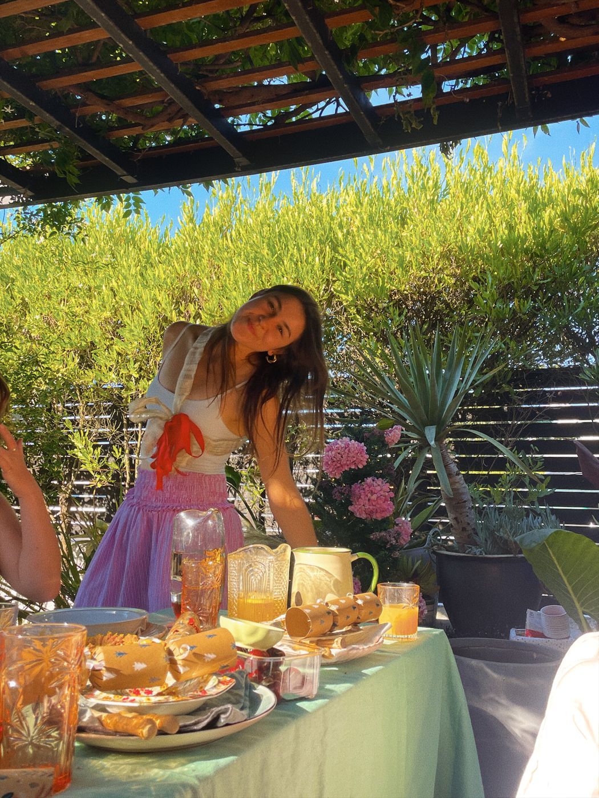
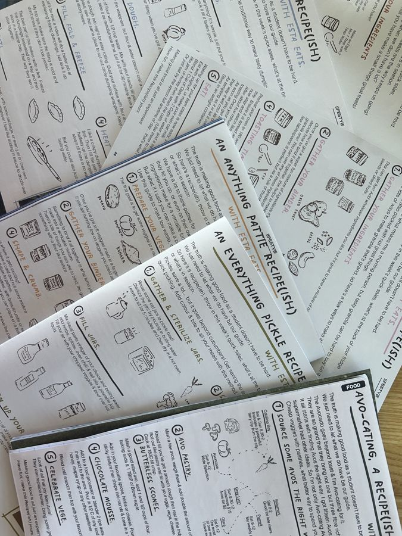
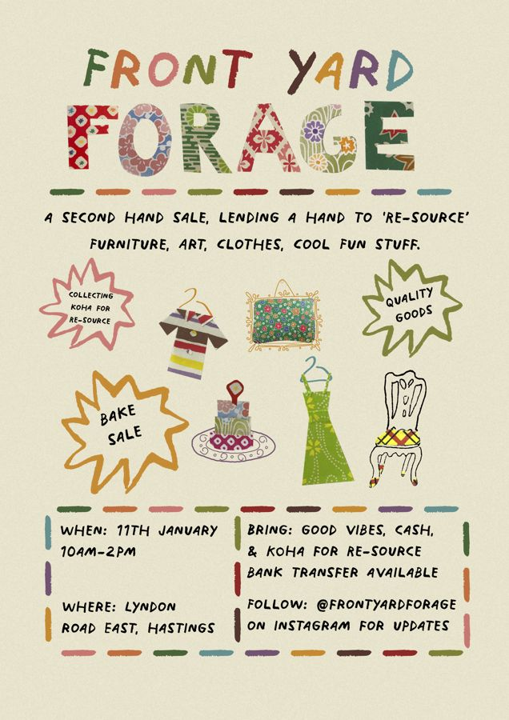
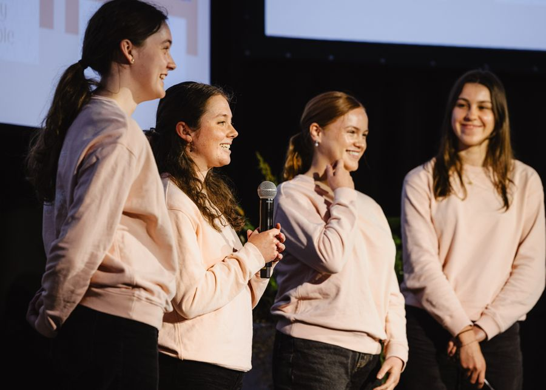
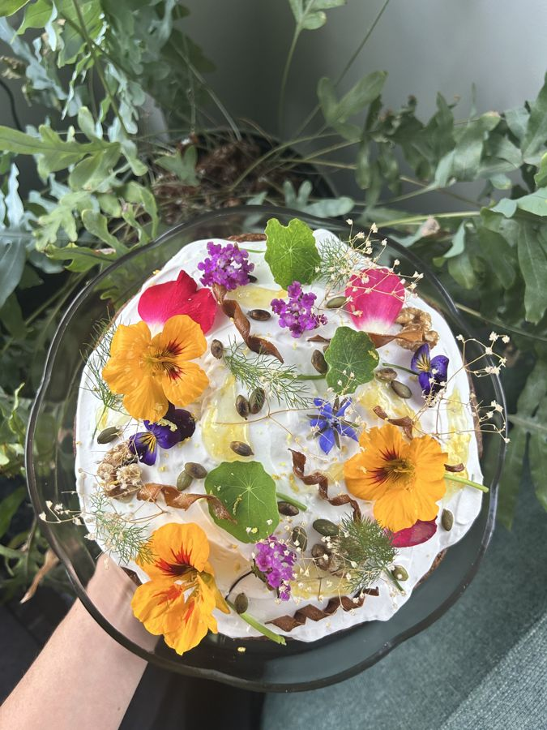

Esta Eats.
Who's Esta?
Esta is a gal with a whole lot of excitement for the world.
She's pretty excited to spend time experimenting in the kitchen,
Riding waves on her boogie board,
Wandering neighbourhoods foraging,
Learning lots about how to create an earth we can be proud of,
But most of all she's pretty excited to bring communities together to make change.

What's She Doing Right Now?
Esta's studying a Bachelor of Design and Commerce majoring in Innovation and Entrepreneurship at the University of Auckland.
Her studies allow for lot's of agency over the content she studies so many of her projects behold food and sustainability related. She's jumped on every opportunity from classes taught by CEO's, Mentorship from a Sustainability consultant to the Deans Leadership program.
Esta loves to learn and keep busy. She heads back home to Hawkes Bay whenever she can to create with Jodi and have long walks celebrating her home.
She Dabbles In.
Graphic Design
Photography and Videography
Recipe writing
Writing
Sewing
Event planning and management
Public Speaking
Cooking, baking & talking about food.
What does she care about?
Protecting the Whenua
Eating good food
Creating experiences for others that are memorable, thought provoking and bring a little joy.
What would would she like her future to be?
She wants to get stuck with creating innovative solutions for our food system, solving problems with the earth in mind and bringing together people for good causes.

Experiences
Click to Read about what has shaped her
Food Communications
Check out how Esta has communicated her love for food.
Front Yard Forage
Read about how Esta Gathered goods for a cause.
Young Enterprise
Esta's Young Enterprise Businesses shaped her thinking learn a little about it here.